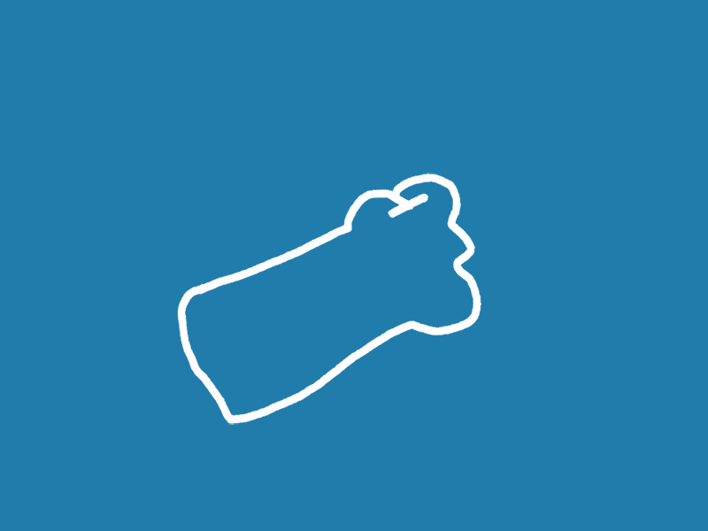

<!--
  Generated template for the NewScoreBoardPage page.

  See http://ionicframework.com/docs/components/#navigation for more info on
  Ionic pages and navigation.
-->
<ion-header>

  <ion-navbar>
    <ion-title>newScoreBoard</ion-title>
  </ion-navbar>

</ion-header>


<ion-content padding style="background-color: #93b8f5">
  <div class="blueBlock">
    
<h1>All the best</h1>
  </div>
  <br>
<div class="blueBlock">
{{nOvers}} {{nPlayers}}
</div>
<log-out></log-out>
</ion-content>
